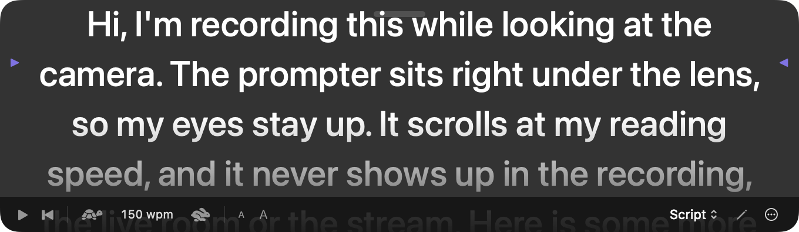

Read your script while looking at the camera
8 October 2026
When you read from notes in the corner of the screen, viewers see you looking away. Snazzy Pro's Camera Prompter puts the words right under the lens, so you read and keep eye contact at the same time.
What is it? A strip of large text just below your Mac's camera. It shows your slide's speaker notes or a script you paste, scrolls at the speed you speak, starts when you press Record, and never appears in the recording, the live room or a stream.

Set it up in a minute
- Click the prompter button next to Record in the toolbar, or choose Record › Show Camera Prompter (⌥⌘T). It appears at the top of the screen with the built-in camera, right under the lens.
- Choose what it shows: Slide notes (it follows your slides, and each slide's notes start from the top) or Script. Click the pencil to type or paste a script.
- Set the speed with the tortoise and hare: it's in words per minute, so 130–150 is a relaxed speaking pace.
- Press Record. The prompter starts scrolling with the recording and pauses when you pause.
Using an external camera?
Put the prompter where that camera is. Drag it by the bar at the top, or open the ⋯ menu and choose Show On and the display. It goes to the top centre of that display and remembers the spot next time. Put Under the Camera brings it back to the built-in camera.
Tips for sounding natural
- Keep the window small and close to the lens. The less your eyes travel, the more it looks like eye contact. The line to read is near the top, marked with small arrows.
- Write for speaking. Short sentences, one idea per paragraph. Ask the assistant: “Turn my notes into a 2-minute script for the prompter.”
- Lose your place? Drag the text up or down with the mouse, or press the back-to-start button.
- Practise once without recording: press play on the prompter itself.
Ask the assistant
The prompter has its own assistant tools, so you can say things like:
- “Write a one-minute intro for this deck and put it on the prompter.”
- “Slow the prompter down to 120 words a minute and make the text bigger.”
- “Move the prompter to the Studio Display.”
Good to know
- The prompter is left out of every capture: screen recordings, the live room, YouTube and other streams, and screenshots.
- It floats above other windows and on every Space, including full-screen apps, so it's there while you present.
- Prefer reading from your phone or tablet? The iPhone and iPad remote also shows your speaker notes as a teleprompter.